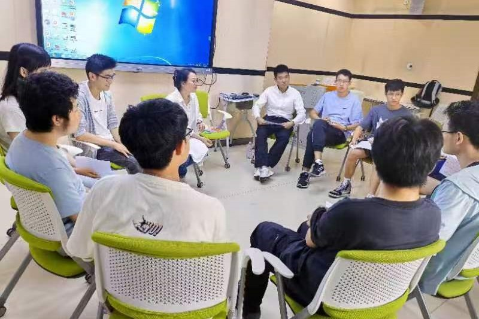
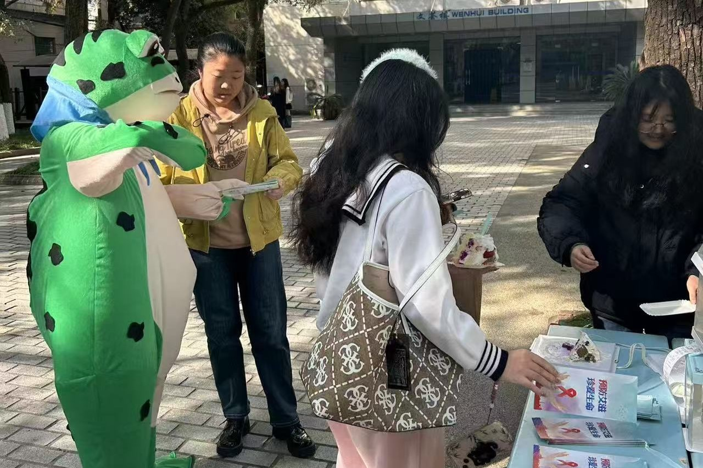
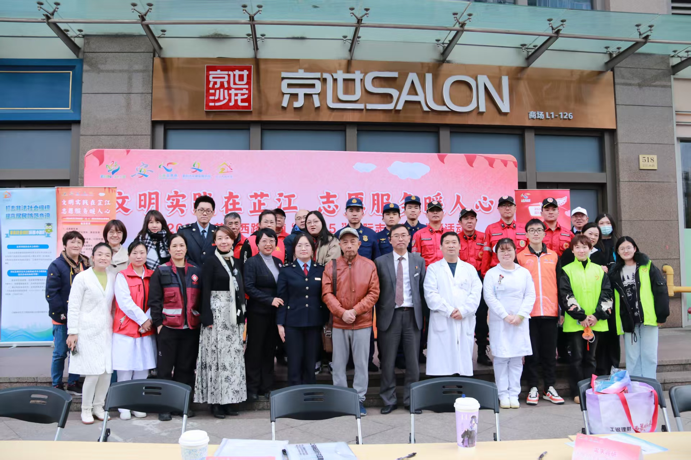

EDUCATION
Shanghai University
B.Sc. in Information Management & Information Systems · Sep 2022 — Jun 2026
GPA 3.80/4.0 · Rank 3/70 (Top 4.3%)
1. Academic Performance
GPA (3.80/4), class rank (3/70, top 4.3%); core courses include Data Warehouse Technology and Applications (95), Information Processing and Practice (95), Fundamentals of Operations Research (92), Operations Research and Optimisation (91), Mathematical Modelling and Decision-making (91), Fundamentals of Programming (92), Management Information Systems (90), and Data Processing Technology (90).

2. English Proficiency
CET-4 (594), CET-6 (578), IELTS 6.5


3. Major Honors
Shanghai Outstanding Graduate, Shanghai Municipal Scholarship, University Outstanding Student (3 times), University Special Scholarship (2 times), Outstanding Class Committee Member, etc.


4. Campus Experience
Sep 2022 — Jun 2026Class League Branch of Information Management Class 2 (Class of 2022) · League Secretary
Also served as a member of the undergraduate league general branch committee for the Class of 2022; organised more than ten themed league day activities and life meetings, and led the branch to win the "Top Ten Vitality League Branches" title of Shanghai University for the 2022–2023 academic year and the "Outstanding League Branch" title in the excellent class evaluation.



Sep 2023 — Jun 2024Psychology Association of Jiading Campus, Shanghai University · President
Led the association in the 2023 Jiading District School AIDS Prevention Fund Project, approved by the Jiading District CDC with 3,000 yuan in project funding; won awards including second prize in the Shanghai University Psychological Commissioner Skills Competition and an excellent psychology poster; organised more than ten large campus and joint activities with an average attendance of over 100 people.



Sep 2023 — Jun 2025Charity Blue Ribbon Volunteer Service Society · Volunteer
Accumulated over 100 hours of volunteer service; served as an epidemic-prevention volunteer, safe-campus ambassador, and student mentor; gave the "Digital Empowerment, Light Up Life" digital street promotion lecture, which was featured on the headline news of Zhijiang New Horizon.


